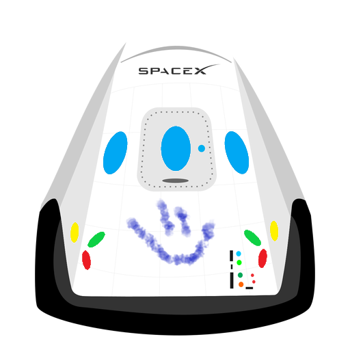

Hyperblog
Tu blog de cabecera
Bienvenido a HyperBlog!
El contenido va escrito aquí y es donde vamos a explicar todo lo que se puede hacer con las ramas de git
Imagen referenciada de un sitio web como parte del reto de Platzi.

Los blogs son la mejor forma de compartir información y tus ideas. Mucho más que ir a conferencias o salir en Youtube.
Excepto si eres un Rockstar. Pero estadístcamente no lo eres... por ahora.
Suscribete y dale Like!